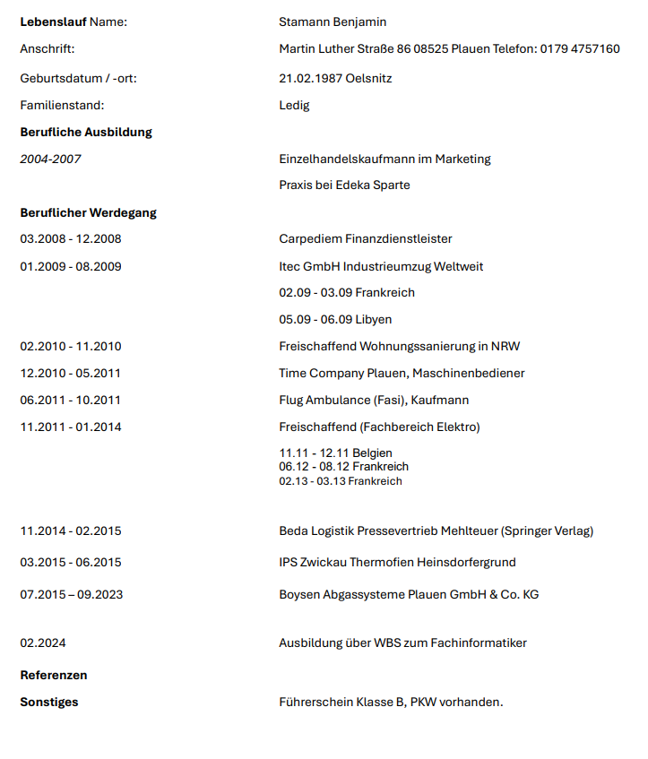

Anschreiben
Sehr geehrte Damen und Herren,
mein Name ist Benjamin Stamann und ich befinde mich seit Februar 2024 in der Ausbildung zum Fachinformatiker für Systemintegration. Ich möchte mich hiermit initiativ für ein 9-monatiges Praktikum im Bereich Systemintegration ab Februar 2025 in Ihrem Unternehmen bewerben.
In meiner bisherigen Ausbildung konnte ich bereits fundierte Kenntnisse in den Bereichen Netzwerkadministration, IT-Sicherheit und Systemintegration erwerben. Besonders faszinierend finde ich die Herausforderungen, die mit der Planung und Umsetzung komplexer IT-Infrastrukturen verbunden sind. Durch verschiedene Projekte und Bausteinprüfungen konnte ich mein theoretisches Wissen bereits praktisch anwenden und erweitern.
Ein Praktikum in Ihrem Unternehmen bietet mir die Möglichkeit, meine Fähigkeiten weiter zu vertiefen und wertvolle Praxiserfahrungen in einem professionellen Umfeld zu sammeln. Ich bin überzeugt, dass ich durch meine Motivation, Lernbereitschaft und meine bisherigen Kenntnisse eine wertvolle Unterstützung für Ihr Team sein kann.
Über eine Einladung zu einem persönlichen Gespräch freue ich mich sehr.
Mit freundlichen Grüßen,
Benjamin Stamann
Lebenslauf
Ausbildung
- 01. TF_IEACIL_Bildung 4.0 im Virtual Classroom
- 02. TF_US_MSO_Anwendungen mit MS Office
- 03. TF_US_HWEG_IT-Hardware, Energie und Grundlagen
- 04. TF_US_NEINT1_Netzwerke und Internettechnologien [Grundlagen]
- 05. TF_US_VBW_Virtualisierung und Betriebssysteme - Windows
- 06. TF_US_NEINT2_Netzwerke und Internettechnologien [Vertiefung]
- 07. TF_US_HWBS2_Windows Server
- 08. TF_US_W1_Kaufmännische und rechtliche Grundlagen des Wirtschaftens
- 09. TF_US_HWBS3_Linux
- 10. TF_US_ISDS_Informationssicherheit und Datenschutz
- 11. TF_US_W2_Rechtliche Grundlagen der Mitarbeiter und Marketing
- 12. TF_US_WEBP1_Grundlagen HTML und CSS
- 13. TF_US_W3_Rechnungswesen - Buchführung, Kosten- und Leistungsrechnung
- 14. TF_US_SUS_Service und Support
- 15. TF_US_P1_Programmiersprachen und prozedurale Programmierung
Bausteinprüfung
Praktikumszeiten
- 26.03.2025 bis 17.09.2025
- 10.10.2025 bis 18.11.2025
- 15.12.2025 bis 18.02.2026